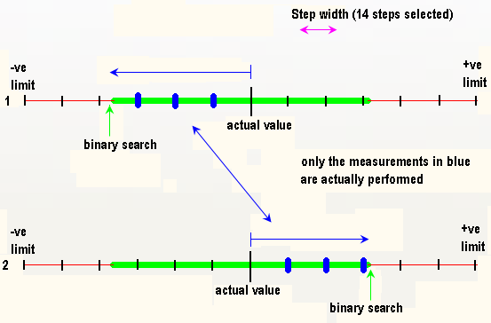

"Only Test to First Transition" selected
Another (quicker) way of performing your pin margin test is to select the option Only Test to First Transition ().
The principle is the same as that outlined in the previous section, except that the starting point of the search is the actual value now. A measurement is performed starting from the actual value in the direction of the lower limit until a fail is encountered. A measurement is then performed starting from the actual value in the direction of the upper limit until a fail is encountered. A binary test is then performed at each of these transition points. This way only the points in a pass region are measured.
The number of steps can be chosen between 2 and 50. The default number of steps is 50.
This technique is shown in the figure below.

In this mode pass/fail transitions beyond the first pass/fail transition in each direction are not detected.
This method performs less tests so it takes less time but it will only detect the first transition in each direction. Any other pass/fail or fail/pass transitions will not be detected.